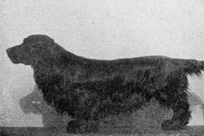

Chapter V. Spaniels
Description
This section is from the book "Sporting Dogs. Their Points And Management In Health, And Disease", by Frank Townend Barton. Also available from Amazon: Sporting Dogs; Their Points and Management in Health and Disease.
Chapter V. Spaniels
General Characteristics Of The Different Varieties
Regarding the word " Spaniel" as a generic title, and the different varie-ties (Toys excepted) as"species" belonging to this genera, the author purposes taking a brief survey of certain features characteristic of Spaniels, leaving distinctive features for discussion under the various titles of classification as adopted by the Kennel Club. Judging from the literature at our disposal upon the subject, it is at once evident that the Spaniel of to-day — no matter how changed by selection — is of very ancient lineage, having existed as the Springing Spaniel and Cocking, for upwards of 600 years, and his uses were then, as they are—or rather ought to be—now : to range well within gun-shot, chase neither fur nor feather; never give tongue; find quickly, and retrieve tenderly on either land, or water.
All these excellences are revealed in many of the beautiful old coloured sporting prints, now so highly priced and prized, and so difficult to obtain, though when obtained are a joy for ever, gladdening the hearts of lovers of the old forms of such sport.
It is, we believe, universally accepted that the Spaniel originally came from Spain, but during what period, there is no reliable data to go upon. The departure, from what we may conveniently speak of as the normal type of Spaniel, is most marked in that of the Irish Water Spaniel, more especially in those coming from the north of Ireland.
Adhering to our original intention of general comparison, the author will first of all consider—
Temperament
Most Spaniels are of a quick, inoffensive disposition, a sour temper being oftener the results of bad training than any inherent vice.
As with all other breeds, quarrels frequently arise over canine love affairs, etc. Few, we think, can speak of the Spaniel as a quarrelsome dog.
The sportsman's Spaniel—which is not commonly the show-bench animal—is of hardy constitution, taking the water in the coldest of weather, doing his eight or ten hours' work in a day, and roughing it in the matter of food and kennelling.
The progeny of the working dog are not any more trouble to rear than those of a rough-and tumble Terrier.
The "soft" constitution of so many black and Sussex Spaniels is due to that foolish system (in breeding) having been carried beyond all sense of reason.
All are water-loving dogs, and, when properly trained, retrieve their game tenderly.
Coat
Either flat, wavy, or curly, a flat coat being typical of the up-to-date Spaniel. Many of the older type have a strong tendency to show a " top-knot," and even now and again (Water Spaniels excepted), in a litter of well-bred ones there is a reversion towards this type. All have an abundance of feather on both fore and hind limbs, Irish Water breed excepted.
Colour
Irish Water Spaniel
Liver.
English Water Spaniel
Liver and white, black and white, black, or black, white, and tan.
The Clumber Spaniel
White, with red, lemon, or orange patches.
The Sussex Spaniel
Golden liver.
Field Spaniels
black or tri-coloured, also liver and white, or tan.
Cocker Spaniels
black, black, white and tan, liver, roan, liver and white, black and white, red and white, etc., etc.
English Springers
Variously coloured.
Welsh Springers
Do. do.
Liver, liver and white, black, and black and white, are by far the most frequent colours of the Spaniel. Tan markings are very common in Welsh Springers.
The Irish Water and the Clumber Spaniel are really the only two varieties free from the introduction of blood from other varieties of the breed.
Except in rare instances, the show-bench Sussex contains a lot of Field Spaniel blood, the result of crossing a typical Sussex Spaniel with a black bitch, over twenty years since, and its perpetuation until the present day.
Head And Ears
They all agree in the anatomical outlines of their skulls, the greatest breadth being in the head of the Clumber.
Heavy facial expressions are characteristic of the pure Sussex, the half-bred, or Jacobs' strain of Sussex, and the Jacobs' strain of black Spaniels. Many Cockers also show it.
Long ears, not only long in the cartilage, but heavily feathered—excepting the Northern Irish Water—are very characteristic of Spaniels, but this large amount of hair in this region can hardly be a recommendation for work, knowing that it is very liable to become entangled in brambles, etc.
The occipital dome is well marked, and in some there is evidence of " stop," as in Toys. Muzzles generally broad ; nose broad, and cheeks full.
Fore Limbs
With the exception previously alluded to, Spaniels all agree in having a short arm and short forearm, largely augmented in the Spaniels of to-day (excepting Clumbers, etc.) through the introduction of Sussex blood.
From a sportman's point of view, this has been a detrimental influence, short legs greatly interfering with retrieving of hares, etc., although there may be what can be described as compensatory advantages, such as getting under the low runs of brushwood, etc.
The older type of Field Spaniel was vastly superior for work to many of the lethargical, long-bodied, low-legged, semi-intelligent specimens on the show benches at the present time.
Body
Mostly of medium length, with well-sprung ribs, strong back and loins.
Tail carried on a level with the back. In all, the feet are full, and toes prominent, well feathered in the interspaces.
Length of body has always been a marked feature of the Sussex, and " massiveness " characteristic of body, head and limbs in the Clumber.
From the foregoing outlines, it must be allowed that conformity of type throughout the whole of the Spaniels is general.
The points, etc., of the different varieties are as follows:—
Continue to:
- prev: Rules Adopted At The Retriever Society (Subject To Alteration)
- Table of Contents
- next: The Clumber